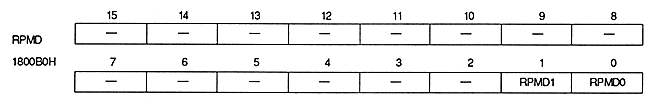

Rotation parameter mode bits : Rotation parameters mode bits (RPMD1, RPMD0), bits 1, 0
| RPMD1 | RPMD0 | Mode | Rotation parameters to use and usage |
| 0 | 0 | 0 | Rotation parameter A |
| 0 | 1 | 1 | Rotation parameter B |
| 1 | 0 | 2 | Read from coefficient table of rotation parameter A The image of A and B by the coefficient data data |
| 1 | 1 | 3 | Switch B image |
Note that the value of this bit is always valid, so be careful when rewriting.
When mode 2 is specified and coefficient data is read for each dot from the coefficient table for rotation parameter A, coefficient data cannot be read for each dot from the coefficient table for rotation parameter B. Therefore, even if a register is specified to read coefficient data for each dot from the coefficient table for rotation parameter B, it is ignored.
In mode 3, coefficient data can be read for each dot from both the coefficient table for rotation parameter A and the coefficient table for rotation parameter B.
Be sure to set mode 0 when displaying RBG1.